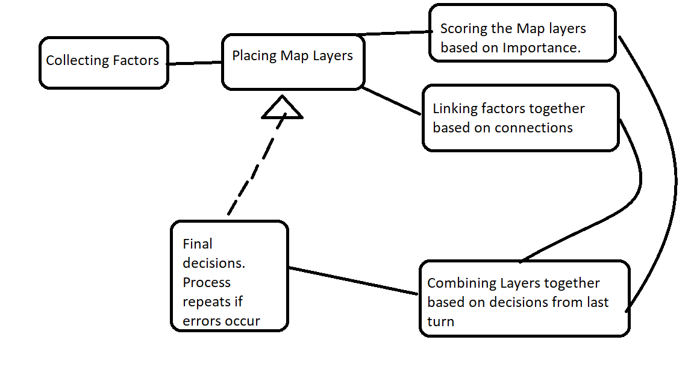
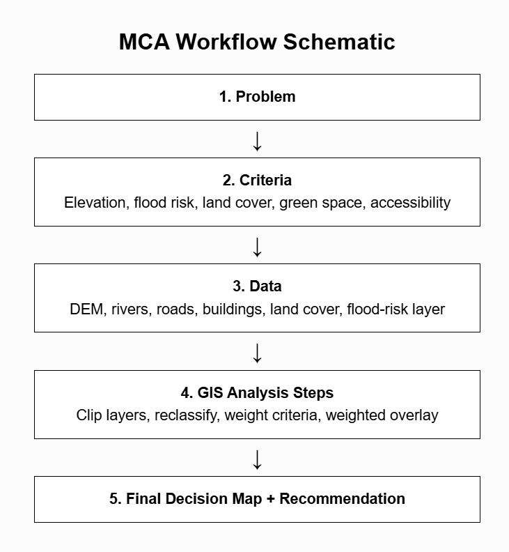

MCA Workflow Sketch

MCA workflow sketch.
MCA Workflow Diagram

MCA workflow diagram.
1. What is Multicriteria Analysis?
Multicriteria Analysis (MCA) is a GIS process that means that we look at multiple factors before we make a decision. WHen planning for real life scenarios, we have to take multiple views into account such as enviromental, social, governmental, legal, etc. As many stakeholders are involved in projects, all of their requirmenets have to be me. For example a biscuit facotry would ahve to be built close enough to roads that transport is possible but its waste also ahs to be discharged in a way that does not pollute the surroundings. It cannot be built close to a river for fear of looding. All of these requirements and cosneuqcnes have to be taken into account.
In order to analyse and exmaien these factors, GIS allows for the use of Spatial Multicriteria Analysis that uses GIS’s specific features of layers. These layers can then be used for analysis and comaprision whcih can help us make an informed decision. Therfore the SMCA can be thought of as a feasibility study. It tries to use data in order to help make an informed decision.
2. Why is MCA valuable in GIS?
MCA is valuable. If different layers can contain different amounts and types of data (elevation, land cover, soil type, housing distribution). These layers can be combined and compared using MCA/GIS. We can judge each factor by its importance such as in the case of the biscuit factory capacity for treatment of water is more important than anything. You can take a slight loss for extra transport but there's no solution for pollution. MCA allows to examine advantages and disadvantages. GIS allows for us to see the layers but MCA weighs them and combines them.
3. What types of questions can MCA help answer?
Other examples of uses of MCA are- “what areas of federal land can be converted to protected wetland”, “in what part of the city should new housing be placed. MCA can be used for a wide variety of tasks.
Option 2
1. What environmental or planning question are you trying to answer?
Which locations in Maastricht would be the most suitable for new green infrastructure that can help reduce urban flooding. Urban flooding or flooding in general is a multifaceted issue that would require examination from many different sides. Using MCA, we can examine these factors. The
2. What factors should be considered?
| Factor | Why it matters? |
|---|---|
| Elevation of terrain | Low lying areas are more likely to collect water runoff and flooding |
| Vicinity to water body | Areas close to water bodies are more likely to be flooded due to both water swelling and draining |
| Land Cover | Impervious surfaces like concrete are more likely to increase water runoff while green, porous land can abosrb water and act as a buffer |
| Density of Building (land Cover) | Dense urban areas tend to absorb lesser amounts of water due to increased runoff from concrete and asphalt. However, they may also have better drainage systems. |
| Green spaces (land cover) | Green spaces can act as a sponge by allowing water from rain or floods to be absorbed in the soil. Plants also prevent erosion caused by moving water. |
| Location | The site has to be located close enough to population centers to ensure that workers can reach easily but it may have certain downsides like noise or smell which have to be accounted for. |
Its important to remember that the infrastructure would reduce flooding so it has to be placed in flooding prone regions. We would want to place the strucure in an area with low elevation, dense construction with few green spaces. The site would be preferably located near a water body. Basically areas with a high flood risk.
Areas with low flood risk would not be desired as the projwct may not be able to meet its capacity. A site at higher elevation and high green cover would have a lower flood risk and the project being siutated here would likely not be jsutified. Sites like this would typically be built by the government, either federal or local and they have to jsutify their use of budget. So an expensive project that only serves a rural community while important would be somewhat unlikely to be built.
As for location, a proper equilibrium would have to be found to ensure that it is close to population centers to justify itself but discussions with locals would be required. Planning ordinances can create huge problems. It may be possible to build the project further away but this would affect the success of the project.
All of these factors would have to be taken into account before the project can even begin to be planned. MCA can help with this. We can assign relative importances to different factors and conduct our studies accordingly.
3. What GIS layers should be considered?
| GIS Layer | Possible Purpose |
|---|---|
| Open Streets Map | Would serve as the basic coordinating layer that we can use to examine the structure of the city. It could also have open source building data that allows us to look at the relative density of buildings, their age and shape. Necessary to find a preliminary site for construction. Woould also be encessary to help make sure we clip the correct area |
| DEM Layer | A digital elevation model map would allow us to look at the elevation of our proposed sites. Arguably one of the most important layers as flooding behavior is greatly driven by gravity. |
| River Waterways layer | Would be included in the DEM layer but a separate waterway layer could provide us with more information. Certain maps may have hydrographic data that allow us determine if certain sides of the river have higher flow rate. River speed is also affected by the terrain of the riverbed. If we want to determine flooding probabilities, this would be important. |
| Population density | A heatmap that shows the relative distribution of peoples in Maastricht. Would be important to determine whether the project should be built in a certain area. |
| Accessibility | Could be done with the help of isochrone maps. Since isochrone maps require centroids instead of polygons. Something would have to serve as a proxy for accesibility for workers. |
| Green Cover | Perhaps a layer with NDVI in order to find regions of high and low plant presence? Vegetated areas can aborb more water so drier areas are under a greater threat. |
4. What would your GIS workflow look like?
1. I would define my area f interest: which is Maastricht. I would have to decide whether i consider muncipal boundaries as the edge or a specific range
2. I would collect the forementioned layers in the forms of rasters that were attached to the bounds set in step 1. After clipping them to the area I would make sure oyther system settings were also the same to prevent future errors.
3. I would weigh the different scales based on how important they are for the long term viability of the project. Based on a percentage system with the total adidng up to 100%. Example: flood risk (30%) + impervious surface (20%) + green space (20%) + elevation (20%) + accessibility (10%). These weights are very important becuase they determine how important something is for the final site. It has to be adjusted based ondiscussions with experts and specialists.
4. Using Raster calculators, i would begin my analysis. I would look for hotspots where many of the features would coincide. After i have properly identified hotspots i would examine their advantages and disadvantages. I would prioritize hotspots which have higher percentages.
5. I would interpret the advantages and disadvantages and offer my final recommendation.
Reflection
MCA is not just about combining map layers. It can be thought of as a way to break down a complex problem where multiple factors play varying roles into a simpler process. Since it’s not really a technical problem (i.e., not a problem where there are specific instructions), the results are heavily and critically dependent on the criteria made by the researcher. So individual experience and influence is very important here. While MCA can make decision making easier, it is heavily dependent on the data that is put in. The results cannot be considered to be completely infallible like an NDVI calculation as it can vary depending on personal choices. MCA can support decision making but it’s variability means that it cannot be considered to be the “primary” decision maker. But it can combine the “primary” layers into a single, understandable format and this is it’s advantage. Investigations in real life would involve having to pay attention to countless factors and real life does not follow the guidelines of a class exercise.
The exercise also showed me that all of the exercises i have done so far would parts of a real “whole”. It helped me see how GIS would be used for a much larger project. It seems overwhelming having to track all the data but i imagine it would get easier with practice.